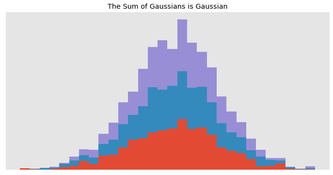

Gaussian processes (GPs) are showing up a lot of places these days: in hyperparameter search, modeling gene transcription and neural signals, surrogates for more complicated simulated phenomena, and with litanies of fast implementations.
Elsewhere one hears that GPs are a species of stochastic process, a generalized form of Bayesian linear regression, yet also a flexible non-parametric modeling technique. Perhaps most perplexing of all, that GPs sample functions, not parameters. In this set of conceptual posts for beginners, I will draw connections between these definitions and hopefully build a more intuitive understanding of GPs.
import numpy as np
import pandas as pd
import matplotlib.pyplot as plt
import warnings
warnings.simplefilter('ignore')
plt.style.use(['ggplot', 'blog_post.mplstyle'])
Part I. Gaussian Process as Stochastic Process
Most introductions to GPs do not discuss stochastic processes but rather presume familiarity with them. That’s too bad because most people can reason about a random walk or a queue in a grocery store, both examples of stochastic processes, but find GPs more challenging. But even some familiarity with stochastic processes won’t clarify GPs without some effort. I first encountered GPs late in a text1, briefly defined and discussed only indirectly through linear operations on them, like their means and variances. We’ll start with some simple examples and work up to GPs.
Markovian Stochastic Processes

A simple example of a stochastic process is the Poisson process pictured above. It has a state that grows at rate $\lambda$. Since it is continuous-timed, starting at time $t$, at any moment by some increment $s$, it can jump, say from $X(t) = 1$ to $X(t + s) = 2$. The probability of jumping over time is defined by its distribution function $F_x(t)$, and since for a Poisson process this is the exponential function $\eqref{eq:exponential}$ with a rate of $\lambda$, $F_x(t)$ has the specical property that no amount of waiting for a jump makes future jumps more or less likely, i.e. it is memoryless.
\begin{equation*} \ F_x(t) = P_x(\tau \geq t) = e^{-\lambda t}, t \geq 0 \label{eq:exponential} \tag{1} \end{equation*}
That the future only depends on the present state and not the past is the Markov property. Below are examples of processes that have also have the markov property. By contrast to the Poisson process, this is due not to their probability of jumping as a function of time, but rather the simple property of being cumulative sums–the next value is a sum of a random value and the current total, but no extra information comes from all the values that came before.
np.random.seed(42)
cnts_dt = np.random.exponential(1, size=(20, 5))
cnts_t = np.cumsum(cnts_dt, axis=0)
disc_t = np.arange(20)
disc_cnts_rvs = np.random.normal(size=(20, 5), scale=1).cumsum(axis=0)
cnts_cnts_rvs = np.random.normal(size=(20, 5), scale=cnts_dt).cumsum(axis=0)
disc_rvs = np.random.random_integers(-1, 1, (20, 5)).cumsum(axis=0)
fig, axs = plt.subplots(2, 2)
(ax1, ax2), (ax3, ax4) = axs
ax1.step(disc_t, disc_rvs, marker='o')
ax2.step(cnts_t, disc_rvs, marker='o')
ax3.plot(disc_t, disc_cnts_rvs, marker='o')
ax4.plot(cnts_t, cnts_cnts_rvs, marker='o')
for ax in axs.flat:
ax.axes.get_xaxis().set_visible(False)
ax.axes.get_yaxis().set_visible(False)
plt.show()
We can roughly think of stochastic processes as discrete- or continuous-parameter (here: time), and continuous- or discrete-valued.
The lower two plots are examples of Wiener processes (in this case, being discrete-time is just a special case of continuous-time). They are Gaussian Processes since each value is just the sum of draws from np.random.normal(), simple sums are linear combinations, and any linear combination of normal distributions is also a normal distribution (right? check the video for pathological cases). They are models of Brownian motion, the motion that atoms in a medium have.
The reason is intuitive. We can think of normally distributed values as those that result from the addition of many independent effects, which atoms in a medium presumably have (think plinko). Now for the sum of standard normal distributions, the deviations cancel each other and converge on the mean, but the variation in those deviations accummulate. Hence we scale the variance by the length of each time step $dt$, thinking of this as a sum of very many small increments. In the lower-left example, the random variables disc_cnts_rvs are scaled by the constant $dt = 1$ while in the lower-right example the random variables cnts_cnts_rvs are scaled by the distances cnts_dt.
n_bins=30
x = np.random.randn(1000, 3)
plt.hist(x, n_bins, density=1, histtype='bar', stacked=True)
plt.gca().axes.get_xaxis().set_visible(False)
plt.gca().axes.get_yaxis().set_visible(False)
plt.title('The Sum of Gaussians is Gaussian')
plt.show()

Second Order Processes
So far we’ve used some rules for defining our variables and how to combine them. We can use functions to specify the rules. The mean of our distubutions $X(t)$ were always zero, i.e. $M_X(t) = 0$. As cumulative sums, our rules also say that the value at at later time can potentially tell us something about the preceding moment, since a large value probably had a large value previously too. Hence in general, two later moments will covary more than two earlier moments or
$$K_X(t_1, t_2) \leq K_X(t_{1} + s, t_{2} + s).$$
It turns out2 that for a Wiener process, the covariance function is just
$$K(x, y) = min(x, y)$$.
There are many possible covariance functions or kernels. I define a few common ones below.
# kernels
def constant_kernel(x, y):
return 1
def linear_kernel(x, y, l=1.0):
return l*x*y
def brownian_kernel(x, y):
return np.min([x, y])
def sq_exp_kernel(x, y, l=1.0):
return np.exp(-(x - y) ** 2 / (l**2 * 2))
# construction
def construct_k(X, kernel_fn, **kwargs):
n = len(X)
C = np.zeros((n, n))
for i in range(n):
for j in range(n):
C[i, j] = kernel_fn(X[i], X[j], **kwargs)
return C
With $M_X(t)$ and $K_X(t_1, t_2)$ in hand, we can define a much wider class of stochastic processes, since we can specify pairwise covariances across the entire domain of $X$. And rather than calculating random cumulative sums, we just sample from the multivariate Gaussian defined by our functions:
$$ X(t) \sim N(M_X(t), K_X(t_1, t_2))$$
One sample from this distribution over $[X_0, X_k]$, where $K(x, y) = min(x, y)$, is equivalent a single walk of the Wiener process over the same domain. In fact, from many “walks” we can work back to the covert covariance structure that instantiated them.
n = 20 # process length
k = 100 # samples
X = np.linspace(0, 10, n)
fig, axs = plt.subplots(2, 2)
fig.suptitle("Top: Covariance to Samples; Bottom: Samples to Covariances",
size=20, x=0.2)
((ax1, ax2), (ax3, ax4)) = axs
for ax in axs.flat:
ax.axes.get_xaxis().set_visible(False)
ax.axes.get_yaxis().set_visible(False)
# Covariance -> Samples
K = construct_k(X, brownian_kernel)
mu = np.zeros(len(X))
sigma = np.identity(1)
samples = np.random.multivariate_normal(mu, K, k).T
ax1.plot(X, samples[:,:5], marker='o', linewidth=1)
ax1.violinplot(samples.T, X,
showmeans=True,
showextrema=False)
ax2.imshow(K)
ax2.axes.get_yaxis().set_visible(True)
# Samples -> Covariance
samples = np.random.normal(size=(n, k), scale=1).cumsum(axis=0) # 100 series
ax3.plot(X, samples[:,:5], marker='o', linewidth=1)
ax3.violinplot(samples.T, X,
showmeans=True,
showextrema=False)
ax4.imshow(np.cov(samples))
ax4.axes.get_yaxis().set_visible(True)
plt.tight_layout()
plt.show()
When we find the covariance for one hundred series of cumulative sums, we can recover the covariance structure. Although approximated, in the limit it is identical to the brownian kernel! Why is that?
Consider how each step in a random cumulative sum series is related to every other. Over many samples, the first steps are just a set of independent draws, so the covariance is zero. And likewise for the first draws and every sum of subsequent draws, hence why the top and left edge are also zero. But the set of 2-sums of IID distributions should covary more–but no covariance is gained by between 2-sums and 3-sums. So the covariance between sums of iid will be defined by lesser of the sums. And this is the np.min() operation we used to define our brownian_kernel for the gaussian process.
Note also that each time step is normally distributed with increasing variance, as we would expect by the diagonal of the covariance structure defining variance. However having control over each component of covariance between time steps allows us to define a much wider class of functions.
n = 20 # process length
k = 50 # samples
X = np.linspace(0, 10, n)
fig, axs = plt.subplots(3, 2, figsize=(16, 12))
fig.suptitle("Varieties of GPs", size=20, x=0.11)
fns = [linear_kernel, sq_exp_kernel, brownian_kernel]
for i, row in enumerate(axs):
(ax1, ax2) = row
K = construct_k(X, fns[i])
mu = np.zeros(len(X))
sigma = np.identity(1)
samples = np.random.multivariate_normal(mu, K, k).T
ax1.plot(X, samples[:,:5], marker='o', linewidth=1)
ax1.violinplot(samples.T, X,
showmeans=True,
showextrema=False)
ax2.imshow(K)
plt.tight_layout()
plt.show()
Just as sums of Gaussians are Gaussians, so sums of GPs are GPs. When the elements of their covariances are added, the resulting covariances combine the features of their components.
k = 5
X = np.arange(0, 1, .01).reshape(-1, 1)
mu = np.zeros(len(X))
fig, axs = plt.subplots(1, 3, sharey=True)
titles = ['Brownian', 'Squared Exponential', 'Brownian + Squared Exponential']
K = [
construct_k(X, brownian_kernel),
construct_k(X, sq_exp_kernel, l=0.05),
construct_k(X, sq_exp_kernel, l=0.05) + 1.5 * construct_k(X, brownian_kernel)
]
for i, ax in enumerate(axs):
samples = np.random.multivariate_normal(mu, K[i], k)
ax.plot(X, samples.T, marker='o', linewidth=0)
ax.set_title(titles[i])
ax.axes.get_xaxis().set_visible(False)
ax.axes.get_yaxis().set_visible(False)
plt.show()
In the next post in this series, I will look at how their covariance structures make Gaussian Processes not only ideal candidates for flexible, yet composible models, but also good for structuring the relationship between sets of parameters in bayesian inference.
References
Hoel, Introduction to Stochastic Processes, p.122
C. E. Rasmussen & C. K. I. Williams, Gaussian Processes for Machine Learning, Appendix B.